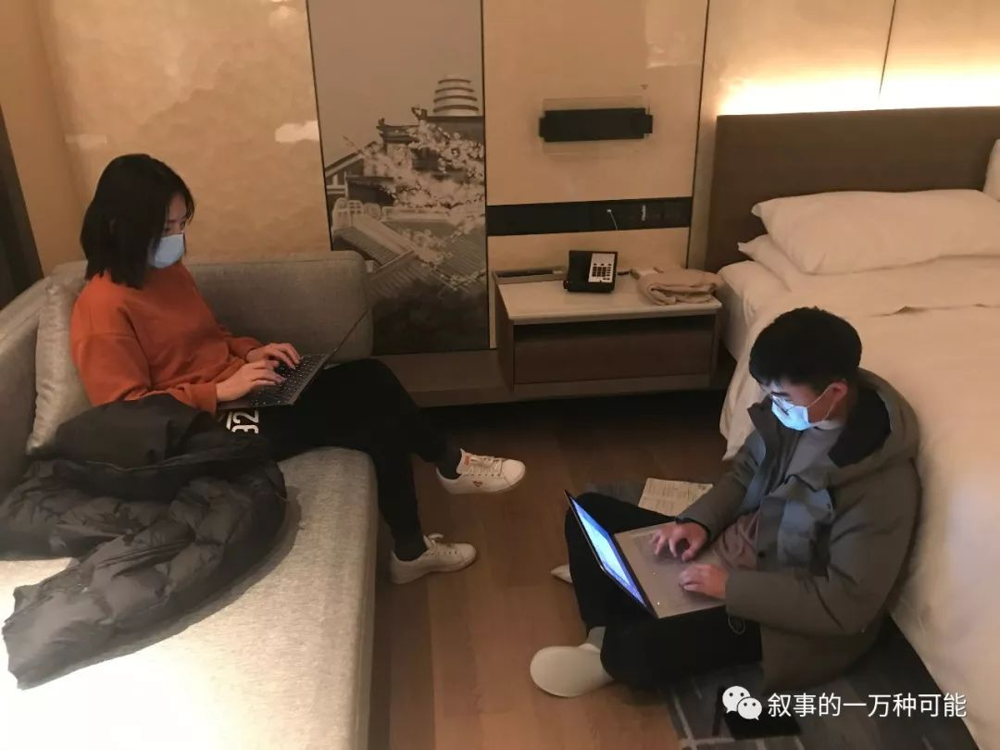
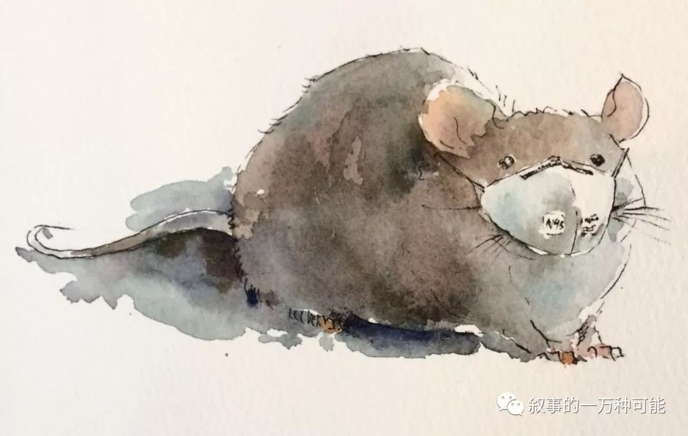

口述实录 | 我为什么要在这个春节囤30万个口罩
原文链接 备份链接 我心想，先送给武汉的医院，武汉安全了全国就安全了；再送给各地的医院，医生安全了，我们就安全。要不然，我们戴了口罩也没用。 口述、图片 | 周朝恩 整理 | 王 嫱 方雨斌 我是80后宁波人，2003年SARS爆发那 …
1月21日下午，我们三人就住进了武汉金银潭的一家酒店，然后迅速开始了解情况。两位记者去华南海鲜市场摸情况，我一边做北京朝阳医院陶勇医生被伤事件的电话采访、赶微信稿，一边询问武汉的医生朋友。我们三人在酒店房间第一次碰面时，都没戴口罩，觉得戴上了似乎有些小题大做。但是等王珊和张从志出去采访了一圈后，两人戴着口罩进来我的房间，“刚刚见到病人了，我们怕传染你”。
“你们在哪里见到病人的？”我觉得很奇怪，这么轻易就能见到病人吗，这不是个传染病吗？
“就在华南海鲜市场，市场虽然关闭了，有人担心自己的铺面，还回去看。他们不少人就在市场旁边住，一栋楼好几家病人，有一家带我们进屋了。”
然后两位记者详细说了这一家人的情况，男主人刚刚病愈出院，女主人李桂芳（化名）1月11号发病时，医生说她病情不严重，每天来打针就行。医院病人已经很多，像她这样自己每天去医院打针的病人不少。
我觉得比较奇怪，李桂芳去的武汉红十字会医院只是一家二级医院，平时人们是因为那里病人少、看病快而去的。如果连这家医院都有很多不明肺炎病人，那其他医院的情况不会乐观。李桂芳第一次去看病时，医生护士只戴着口罩，几天后医护人员从头到脚防护了起来。李桂芳从排队到输液的等候时间，从3小时变为了7小时，病人显然非常多。
李桂芳这样的病人并未被隔离起来，“那这些不是行动的传染源吗？”我觉得非常吃惊。记者们又说起另一个采访对象的情况，这是一位刚刚被金银潭医院治愈出院的23岁患者的故事。这个故事里有两点，与当时政府告知的信息感觉不一样：第一，政府告知基本是中老年人才会被感染；第二 武汉卫健委在1月15号之前一直说“目前没有发现明确的人传人的证据”，后来改为“不能排除有限人传人的可能，但持续人传人的风险较低”。这个23岁年轻人平时身体状况很正常，他没有进去过华南海鲜市场，只是最近一次骑车经过那里而已。
我又让记者核实了一下李桂芳第一次去医院的时间，1月11号。现在距离1月11号又过去了10天，这些病人们四处行走，10天下来会是个什么情形？如果记者们出去调查一圈，就能得出让我如此惊诧的信息，那全局的情况到底有多严重呢？

我赶紧进一步询问武汉的医生朋友罗晓力（化名），他所在的是一家三级医院，他看到的情况更严重。本来我们约好第二天中午见面，到了第二天早上，罗晓力告诉我：实在抱歉，还是不见面了，干了大半辈子的医生，弄不好会因为这事丢了饭碗。
他所在的医院，从去年12月底陆续接诊华南海鲜市场过来的肺炎病人，一线医生非常警觉，认为“非典”或是与之类似的疾病卷土重来了。但他们医院有医生因为在微信里讲述此事，被有关部门训诫。罗晓力说，这种训诫给了医生们不小的压力：接下来，在医院里谁提及此事谁就被批评，稍微重要一点的岗位就得签保密协议。罗晓力很无奈，“我在亲戚群里一再提醒大家出门戴口罩，不要聚会聚餐，但又不能说不明肺炎的情况，只能是躲躲闪闪。如果早十几天能让我们医生预警，情况不会到今天这一步。”
1月21日晚上，王珊联系上一位刚刚到武汉考察过的病毒学家，他的嗓子因为一时生病失声，在微信里用文字劝我们，“马上离开武汉！”他判断武汉的肺炎疫情已经非常严重，都快到战争状态了，怎么还没有人拉警报呢？武汉没有在传播初期控制住病毒，很快会造成大面积感染。他建议我们赶紧离开武汉，回到家里自我隔离两周。
我还是说服了罗晓力简单见了一面。1月22日中午，我到了医院门口，他说我们应该在另一个大门见面，但一再嘱咐，“你不要穿过医院，戴了口罩也不行，全是病人，千万不要从医院里边穿过来！”
我们在医院门口，隔着有一米的距离说话，他戴着三层口罩，我戴了两层。我本以为他这几天被调去协和医院支援肺炎“前线”，他说，“哪里用协和医院？我们这里就是前线。我这里已经几百名疑似病人，检测盒子基本发不下来，很难确诊。但这个病毒导致的肺部病变，与其他疾病导致的完全不一样，看CT就很清楚。”我深吸一口气，幸亏，我家取消了昨天的寿宴。我哪里知道，距离我家准备聚会的酒楼仅两公里处，这家医院的肺炎疑似病人，就已有几百例！真是一墙之外，世界迥然。我也以为在几乎人人都用微信、微博、抖音的今天，整个社会并无秘密可言。可是一个这么大的突发事件，犹如大片墨汁浸入白布，看见的人被戴上了严严实实的“口罩”，公众依然在狂欢。

1月22号下午，《三联生活周刊》的微信公众号推出了我们武汉肺炎的开篇报道，“武汉新型肺炎：为何直到今天才引起更大注意？”这篇文章迅速获得了很大的反响，近千万读者读了文章，大家意识到，武汉不明肺炎显然没有得到与它的严重程度相匹配的重视。
作为一个有近20年采访经验的记者，让我吃惊的是，这篇报道的采访难度相当小。一般我们做深度调查，往往核心信息源很难接近，可这次我的感觉是，只要有人去武汉某个医院看一眼，找一线的医生聊一聊，找排队的病人聊一聊，正在疯狂席卷武汉的疫情，如此显而易见！这就像一锅要煮沸的面条，炉火烧得很旺，泡沫层快速地越涨越厚，很快就要溢出了锅。但就是有那么薄薄的一层皮，紧紧扣住了信息的口，让这个在医生群体里几乎人人皆知的事实，就是传达不到公众层面里。
让我感到更深一层无奈的是，我们看到的，不是人人都拥有手机吗，不是人人都在忙碌地发微博、发微信吗？为什么在1月23日武汉骤然封城前，医院的世界与公众的世界，楚河汉界呢？医疗专业群体，在我们的社会里，就如此没有话语权吗？我们是生活在2020年的信息社会吗？真相难道可以被屏蔽在每一部手机、每一张嘴后边？那我们每天都在忙着表达什么呢？
Hi吴琪
长按二维码向我转账
受苹果公司新规定影响，微信 iOS 版的赞赏功能被关闭，可通过二维码转账支持公众号。
文章已于修改
原文链接 备份链接 我心想，先送给武汉的医院，武汉安全了全国就安全了；再送给各地的医院，医生安全了，我们就安全。要不然，我们戴了口罩也没用。 口述、图片 | 周朝恩 整理 | 王 嫱 方雨斌 我是80后宁波人，2003年SARS爆发那 …
原文链接 备份链接 杨晨还在等通知。他在等待“十号令”带给他以及他的家庭命运的转机，他是一位“武汉病人”的家属。 让他有所期许的“十号令”，是2月2日发出的。按照“十号令”的要求，自通告发布之日起，对全市经发热门诊诊断有肺炎症状的发热病人 …
原文链接 备份链接 3月21日。 封城第59天。这么长时间了！ 昨天那么大的太阳，今天突然就阴了。下午还下了点雨。这时节的春雨，对于院子里的树以及花，都还是很需要的。前两三天，武大樱花盛开，树下空荡无人，估计是记者拍了一些照片，同学群里便 …
原文链接 备份链接 记者/ 魏晓涵 梁婷 韩谦 佟晓宇 实习记者/ 陈威敬 胡琪琛 编辑/杨宝璐 宋建华 医护人员严阵以待 摄影/高瞾 2019年12月30日，武汉市卫计委内部文件流出，称“武汉出现不明原因的肺炎”，与华南海鲜批发市场有 …
原文链接 备份链接 1月23日，武汉市公共交通停运。一些本地的私家车主决定为医务人员护航，免费接送他们上下班，并运送救援物资到各大医院。34岁的车车便是其中一员。 文 | 吴美芬 从1月底开始，车车几乎跑遍了武汉每一个医院，为医护人员送 …